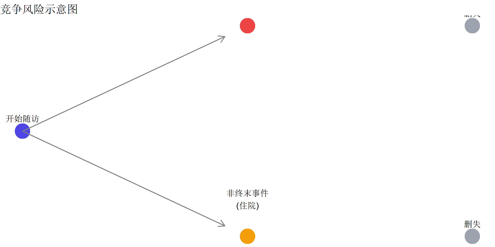
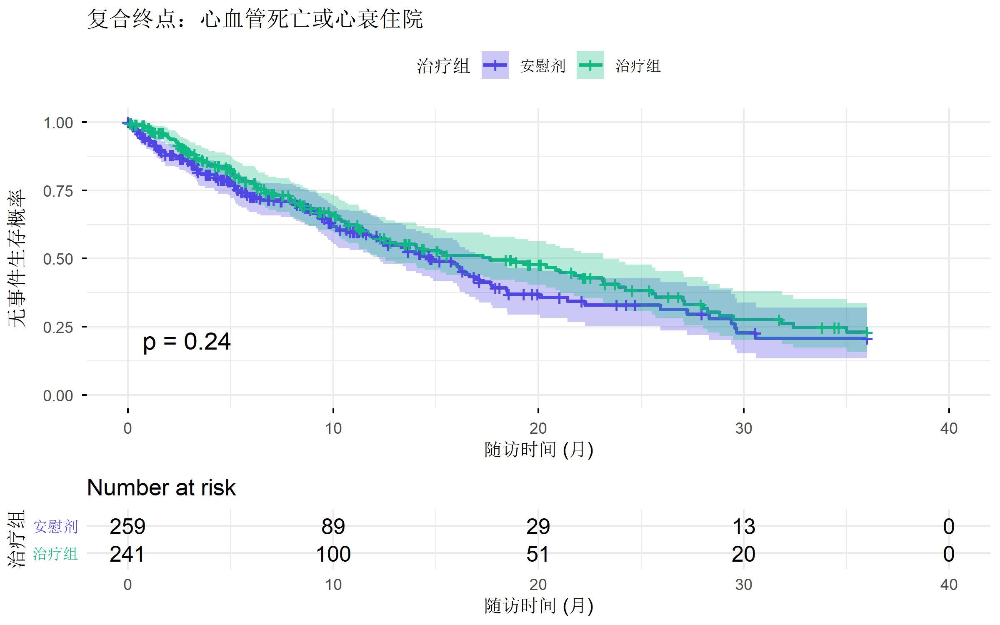
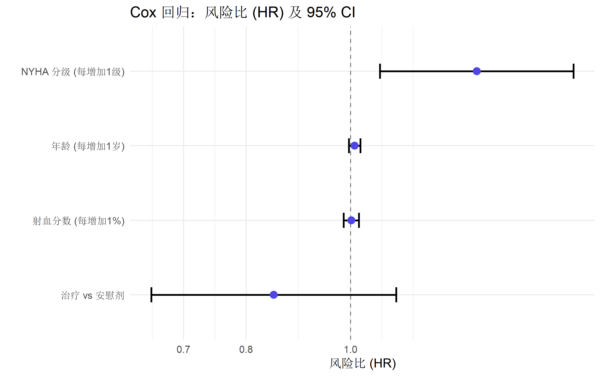

# 安装 TxEffectsSurvival
# install.packages("TxEffectsSurvival")
# 加载包
library(TxEffectsSurvival)
library(tidyverse)
library(survival)TxEffectsSurvival: 竞争风险下的治疗效果分析
R语言方法
生存分析
竞争风险
使用 TxEffectsSurvival 包进行终末事件和非终末事件的治疗效果推断，包括 Win Ratio、RICH 等方法。
什么是 TxEffectsSurvival
TxEffectsSurvival 是一个用于在竞争风险框架下评估治疗效果的 R 包。它提供了多种置信区间和检验方法，适用于同时存在终末事件（如死亡）和非终末事件（如疾病复发）的生存数据分析。
核心方法
| 方法 | 全称 | 说明 |
|---|---|---|
| Win Ratio | 胜率 | 基于成对比较的半参数方法 |
| RICH | Ratio of Integrated Cumulative Hazard | 累积风险比的积分比 |
| RITCH | Ratio of Integrated Transformed Cumulative Hazard | 变换累积风险的积分比 |
适用场景
- 临床试验：评估新治疗对多个终点的效果
- 心血管研究：心衰试验中的死亡和住院事件
- 肿瘤学：无进展生存和总生存的联合分析
- 竞争风险分析：存在多种结局类型的生存数据
安装与加载
基本概念
竞争风险
在生存分析中，竞争风险是指多种事件类型相互竞争，一种事件的发生会阻止其他事件的观察：

Win Ratio (胜率)
Win Ratio 是一种非参数方法，通过成对比较治疗组和对照组的患者：
- 赢 (Win)：治疗组患者结局更好
- 输 (Loss)：对照组患者结局更好
- 平局 (Tie)：无法判断
\[\text{Win Ratio} = \frac{\text{治疗组赢的次数}}{\text{对照组赢的次数}}\]
RICH 和 RITCH
- RICH：累积风险函数积分的比值（非参数）
- RITCH：变换后累积风险积分的比值（更稳健）
这些方法在非比例风险情况下仍然有效。
数据格式
TxEffectsSurvival 需要以下格式的数据：
# 模拟竞争风险数据
set.seed(2024)
n <- 300
# 创建模拟数据
sim_data <- tibble(
id = 1:n,
# 治疗组 (1) 或对照组 (0)
treatment = sample(c(0, 1), n, replace = TRUE),
# 事件时间
time = rexp(n, rate = 0.1) * (1 + 0.3 * treatment),
# 事件类型: 0=删失, 1=终末事件(死亡), 2=非终末事件(住院)
event_type = sample(c(0, 1, 2), n, replace = TRUE, prob = c(0.4, 0.3, 0.3))
) |>
mutate(
# 限制随访时间
time = pmin(time, 24),
event_type = ifelse(time >= 24, 0, event_type)
)
# 查看数据结构
head(sim_data, 10)# A tibble: 10 × 4
id treatment time event_type
<int> <dbl> <dbl> <dbl>
1 1 1 18.3 2
2 2 0 2.62 2
3 3 0 11.8 0
4 4 1 24 0
5 5 0 1.54 1
6 6 0 6.75 0
7 7 0 24 0
8 8 1 10.2 0
9 9 0 2.58 2
10 10 1 14.4 2# 事件分布
table(sim_data$event_type, sim_data$treatment)
0 1
0 66 66
1 51 34
2 40 43变量说明
| 变量 | 说明 |
|---|---|
id |
患者标识 |
treatment |
治疗组 (1) 或对照组 (0) |
time |
事件时间或删失时间 |
event_type |
事件类型：0=删失, 1=终末事件, 2=非终末事件 |
基本分析
Win Ratio 分析
# 使用 TxEffectsSurvival 进行 Win Ratio 分析
# 注意：需要按照包的具体接口调用
# 首先进行传统生存分析作为参考
library(survival)
# 终末事件的 Kaplan-Meier 曲线
km_terminal <- survfit(
Surv(time, event_type == 1) ~ treatment,
data = sim_data
)
# 绘制生存曲线
plot(km_terminal,
col = c("#4f46e5", "#10b981"), lwd = 2,
xlab = "时间 (月)", ylab = "无终末事件生存概率",
main = "终末事件：治疗组 vs 对照组"
)
legend("topright", c("对照组", "治疗组"),
col = c("#4f46e5", "#10b981"), lwd = 2
)
竞争风险累积发生率
# 使用 cmprsk 或相关方法计算累积发生率
library(survival)
# 创建多状态生存对象
ms_surv <- Surv(sim_data$time, factor(sim_data$event_type))
# 按治疗组分层的生存曲线
km_fit <- survfit(ms_surv ~ treatment, data = sim_data)
# 查看结果摘要
summary(km_fit)Call: survfit(formula = ms_surv ~ treatment, data = sim_data)
treatment=0
time n.risk n.event Pr((s0)) Pr(1) Pr(2)
0.0175 157 1 0.994 0.00637 0.00000
0.0211 156 1 0.987 0.00637 0.00637
0.1023 154 1 0.981 0.00637 0.01278
0.2096 153 1 0.974 0.01278 0.01278
0.2121 152 1 0.968 0.01278 0.01919
0.3461 150 1 0.962 0.01923 0.01919
0.4555 148 1 0.955 0.02573 0.01919
0.5035 147 1 0.949 0.02573 0.02569
0.5507 146 1 0.942 0.03223 0.02569
0.6870 145 1 0.936 0.03223 0.03219
0.7619 143 1 0.929 0.03877 0.03219
0.8519 142 1 0.923 0.04531 0.03219
0.9365 141 1 0.916 0.04531 0.03873
1.0691 140 1 0.909 0.04531 0.04527
1.2570 138 1 0.903 0.05190 0.04527
1.3604 136 1 0.896 0.05190 0.05191
1.5352 134 1 0.890 0.05859 0.05191
1.5670 133 1 0.883 0.06528 0.05191
1.7215 130 1 0.876 0.07207 0.05191
1.7826 129 1 0.869 0.07207 0.05870
1.8726 128 1 0.862 0.07207 0.06549
1.8949 126 1 0.856 0.07891 0.06549
1.9090 125 1 0.849 0.08576 0.06549
1.9135 124 1 0.842 0.08576 0.07234
2.0347 123 1 0.835 0.09260 0.07234
2.0752 122 1 0.828 0.09945 0.07234
2.3451 121 1 0.821 0.09945 0.07918
2.5147 119 1 0.814 0.10635 0.07918
2.5803 118 1 0.808 0.10635 0.08608
2.6174 115 1 0.801 0.10635 0.09310
2.6485 113 1 0.793 0.10635 0.10019
2.7319 111 1 0.786 0.10635 0.10734
3.0151 109 1 0.779 0.11357 0.10734
3.0320 108 1 0.772 0.12078 0.10734
3.0946 107 1 0.765 0.12078 0.11455
3.1765 105 1 0.757 0.12806 0.11455
3.2775 104 1 0.750 0.13534 0.11455
3.4426 102 1 0.743 0.14270 0.11455
3.4586 101 1 0.735 0.14270 0.12191
3.8220 97 1 0.728 0.15028 0.12191
3.8724 96 1 0.720 0.15786 0.12191
3.9865 95 1 0.713 0.16544 0.12191
4.2134 94 1 0.705 0.17302 0.12191
4.3832 93 1 0.697 0.18061 0.12191
4.4043 92 1 0.690 0.18819 0.12191
4.4517 91 1 0.682 0.19577 0.12191
4.4540 90 1 0.675 0.19577 0.12949
4.6207 89 1 0.667 0.19577 0.13707
4.8642 88 1 0.660 0.20335 0.13707
4.9169 87 1 0.652 0.21093 0.13707
4.9717 86 1 0.644 0.21851 0.13707
5.2304 84 1 0.637 0.21851 0.14474
5.2963 83 1 0.629 0.21851 0.15241
5.3684 80 1 0.621 0.22638 0.15241
5.4810 79 1 0.613 0.23424 0.15241
5.5173 77 1 0.605 0.23424 0.16038
5.5993 76 1 0.597 0.24220 0.16038
5.7808 74 1 0.589 0.25028 0.16038
5.8223 73 1 0.581 0.25028 0.16845
5.8508 72 1 0.573 0.25835 0.16845
5.9459 71 1 0.565 0.25835 0.17652
6.2026 69 1 0.557 0.25835 0.18471
6.2144 68 1 0.549 0.25835 0.19290
6.9049 64 1 0.540 0.26693 0.19290
6.9796 63 1 0.532 0.26693 0.20148
7.4768 59 1 0.523 0.27594 0.20148
7.7972 56 1 0.513 0.27594 0.21081
7.9762 55 1 0.504 0.28527 0.21081
8.0530 54 1 0.495 0.29460 0.21081
8.0637 53 1 0.485 0.29460 0.22014
8.3772 52 1 0.476 0.30393 0.22014
8.8462 50 1 0.466 0.30393 0.22966
8.8659 49 1 0.457 0.31345 0.22966
9.0286 48 1 0.447 0.32297 0.22966
9.7061 46 1 0.438 0.33269 0.22966
10.0322 44 1 0.428 0.34264 0.22966
10.5045 43 1 0.418 0.34264 0.23961
10.8279 41 1 0.408 0.34264 0.24980
11.0571 40 1 0.397 0.34264 0.25999
11.0830 38 1 0.387 0.35310 0.25999
12.8922 32 1 0.375 0.35310 0.27208
13.2323 30 1 0.362 0.35310 0.28457
13.8934 29 1 0.350 0.35310 0.29706
13.9879 26 1 0.336 0.36655 0.29706
15.2754 22 1 0.321 0.38184 0.29706
15.7918 21 1 0.306 0.38184 0.31235
18.2352 17 1 0.288 0.38184 0.33034
18.7762 16 1 0.270 0.39983 0.33034
18.7984 15 1 0.252 0.41782 0.33034
22.1936 12 1 0.231 0.43881 0.33034
22.4589 11 1 0.210 0.43881 0.35133
treatment=1
time n.risk n.event Pr((s0)) Pr(1) Pr(2)
0.231 142 1 0.993 0.00000 0.00704
0.381 140 1 0.986 0.00000 0.01413
0.395 139 1 0.979 0.00709 0.01413
0.407 138 1 0.972 0.00709 0.02123
0.509 136 1 0.965 0.01424 0.02123
0.809 134 1 0.957 0.01424 0.02843
0.867 132 1 0.950 0.01424 0.03568
0.894 131 1 0.943 0.02149 0.03568
0.913 130 1 0.936 0.02149 0.04293
0.913 129 1 0.928 0.02874 0.04293
0.987 127 1 0.921 0.02874 0.05024
1.412 123 1 0.914 0.02874 0.05773
1.582 121 1 0.906 0.03629 0.05773
1.585 120 1 0.898 0.04384 0.05773
1.594 119 1 0.891 0.04384 0.06528
2.062 117 1 0.883 0.04384 0.07289
2.137 116 1 0.876 0.05146 0.07289
2.188 115 1 0.868 0.05146 0.08051
2.418 114 1 0.860 0.05146 0.08812
2.732 111 1 0.853 0.05146 0.09587
2.925 109 1 0.845 0.05928 0.09587
3.560 104 1 0.837 0.06740 0.09587
3.908 101 1 0.828 0.06740 0.10416
3.927 100 1 0.820 0.06740 0.11244
4.438 96 1 0.812 0.06740 0.12098
4.557 95 1 0.803 0.07595 0.12098
5.236 91 1 0.794 0.07595 0.12981
5.391 88 1 0.785 0.08497 0.12981
5.718 86 1 0.776 0.09410 0.12981
5.942 85 1 0.767 0.09410 0.13894
5.959 84 1 0.758 0.09410 0.14807
6.152 83 1 0.749 0.10323 0.14807
6.594 82 1 0.740 0.10323 0.15720
6.672 80 1 0.730 0.11248 0.15720
6.750 79 1 0.721 0.12172 0.15720
6.894 78 1 0.712 0.13097 0.15720
7.324 76 1 0.702 0.13097 0.16657
7.644 75 1 0.693 0.14033 0.16657
7.852 74 1 0.684 0.14970 0.16657
7.885 73 1 0.674 0.14970 0.17593
8.114 72 1 0.665 0.15906 0.17593
8.137 71 1 0.656 0.16843 0.17593
8.171 70 1 0.646 0.16843 0.18530
8.226 69 1 0.637 0.17780 0.18530
8.326 68 1 0.628 0.18716 0.18530
8.392 67 1 0.618 0.19653 0.18530
9.084 64 1 0.609 0.20619 0.18530
9.171 63 1 0.599 0.20619 0.19496
9.186 62 1 0.589 0.21585 0.19496
9.289 61 1 0.580 0.22551 0.19496
9.708 59 1 0.570 0.22551 0.20478
9.717 58 1 0.560 0.22551 0.21460
9.807 57 1 0.550 0.23533 0.21460
9.922 55 1 0.540 0.23533 0.22461
10.906 53 1 0.530 0.23533 0.23479
11.083 52 1 0.520 0.24552 0.23479
11.305 51 1 0.509 0.25571 0.23479
11.893 48 1 0.499 0.26632 0.23479
12.103 46 1 0.488 0.26632 0.24564
12.740 45 1 0.477 0.27717 0.24564
14.086 42 1 0.466 0.27717 0.25700
14.360 40 1 0.454 0.27717 0.26865
14.452 39 1 0.443 0.27717 0.28029
14.482 38 1 0.431 0.27717 0.29194
14.611 37 1 0.419 0.27717 0.30358
15.058 35 1 0.407 0.27717 0.31556
15.742 32 1 0.395 0.27717 0.32829
15.765 31 1 0.382 0.27717 0.34102
16.859 30 1 0.369 0.27717 0.35374
16.985 29 1 0.356 0.27717 0.36647
17.489 27 1 0.343 0.27717 0.37967
17.913 25 1 0.329 0.29090 0.37967
18.269 21 1 0.314 0.30658 0.37967
18.300 20 1 0.298 0.30658 0.39536
19.855 18 1 0.282 0.30658 0.41192
20.409 17 1 0.265 0.32314 0.41192
23.270 13 1 0.245 0.32314 0.43230TxEffectsSurvival 核心函数
主要分析函数
# Win Ratio 分析
# 注意：以下为示例代码，具体函数名称请参考包文档
# 计算事件特定的 Win Ratio
wr_result <- win_ratio(
time = sim_data$time,
event = sim_data$event_type,
treatment = sim_data$treatment,
terminal_event = 1, # 终末事件代码
nonterminal_event = 2 # 非终末事件代码
)
# 查看结果
print(wr_result)RICH/RITCH 分析
# RICH 方法
rich_result <- rich_test(
time = sim_data$time,
event = sim_data$event_type,
treatment = sim_data$treatment
)
# RITCH 方法
ritch_result <- ritch_test(
time = sim_data$time,
event = sim_data$event_type,
treatment = sim_data$treatment
)统计检验
比例风险假设检验
# 检验比例风险假设
# 在 PH 假设下，Win Ratio 收敛到风险比 (HR)
ph_test <- test_proportional_hazards(
time = sim_data$time,
event = sim_data$event_type,
treatment = sim_data$treatment
)
print(ph_test)全局零假设检验
# 检验无治疗效果的全局零假设
global_test <- global_null_test(
time = sim_data$time,
event = sim_data$event_type,
treatment = sim_data$treatment
)
print(global_test)实战案例：心衰临床试验
模拟一个典型的心血管临床试验场景：
# 模拟心衰临床试验数据
set.seed(42)
n_patients <- 500
hf_trial <- tibble(
patient_id = 1:n_patients,
# 随机化到治疗组或安慰剂组
arm = sample(c("Treatment", "Placebo"), n_patients, replace = TRUE),
treatment = as.numeric(arm == "Treatment"),
# 基线特征
age = round(rnorm(n_patients, 65, 10)),
ef = round(rnorm(n_patients, 30, 8)), # 射血分数
nyha = sample(2:4, n_patients, replace = TRUE, prob = c(0.3, 0.5, 0.2))
) |>
mutate(
# 生成事件时间（治疗组有更好的预后）
baseline_hazard = 0.1 * (1 + 0.02 * (age - 65) + 0.5 * (nyha == 4)),
hazard = baseline_hazard * ifelse(treatment == 1, 0.75, 1),
time_to_event = rexp(n_patients, rate = hazard),
# 事件类型
event_prob = runif(n_patients),
event_type = case_when(
event_prob < 0.25 ~ 1, # 心血管死亡
event_prob < 0.50 ~ 2, # 心衰住院
TRUE ~ 0 # 删失
),
# 限制随访时间
follow_up = pmin(time_to_event, 36),
event_type = ifelse(time_to_event > 36, 0, event_type)
) |>
select(patient_id, arm, treatment, age, ef, nyha, follow_up, event_type)
# 查看数据
head(hf_trial, 10)# A tibble: 10 × 8
patient_id arm treatment age ef nyha follow_up event_type
<int> <chr> <dbl> <dbl> <dbl> <int> <dbl> <dbl>
1 1 Treatment 1 54 17 3 13.5 0
2 2 Treatment 1 65 14 4 2.75 0
3 3 Treatment 1 53 27 3 29.5 1
4 4 Treatment 1 67 31 3 4.95 0
5 5 Placebo 0 78 12 4 3.38 1
6 6 Placebo 0 55 32 2 6.84 0
7 7 Placebo 0 58 33 3 17.8 2
8 8 Placebo 0 65 40 2 5.22 2
9 9 Treatment 1 55 31 3 10.3 2
10 10 Placebo 0 61 32 4 4.63 0描述性分析
# 基线特征比较
hf_trial |>
group_by(arm) |>
summarise(
n = n(),
age_mean = mean(age),
ef_mean = mean(ef),
`NYHA III-IV (%)` = mean(nyha >= 3) * 100,
`CV Death (%)` = mean(event_type == 1) * 100,
`HF Hosp (%)` = mean(event_type == 2) * 100,
.groups = "drop"
)# A tibble: 2 × 7
arm n age_mean ef_mean `NYHA III-IV (%)` `CV Death (%)` `HF Hosp (%)`
<chr> <int> <dbl> <dbl> <dbl> <dbl> <dbl>
1 Placebo 259 64.4 30.8 71.8 20.1 25.1
2 Treatme… 241 64.6 29.1 72.6 20.7 25.3生存曲线
# 按治疗组绘制 Kaplan-Meier 曲线
library(survminer)
# 复合终点（死亡或住院）
km_composite <- survfit(
Surv(follow_up, event_type > 0) ~ arm,
data = hf_trial
)
# 使用 ggsurvplot
ggsurvplot(
km_composite,
data = hf_trial,
palette = c("#4f46e5", "#10b981"),
risk.table = TRUE,
pval = TRUE,
conf.int = TRUE,
xlab = "随访时间 (月)",
ylab = "无事件生存概率",
title = "复合终点：心血管死亡或心衰住院",
legend.labs = c("安慰剂", "治疗组"),
legend.title = "治疗组",
ggtheme = theme_minimal()
)
Cox 回归分析
# Cox 回归
cox_model <- coxph(
Surv(follow_up, event_type > 0) ~ treatment + age + ef + nyha,
data = hf_trial
)
# 模型摘要
summary(cox_model)Call:
coxph(formula = Surv(follow_up, event_type > 0) ~ treatment +
age + ef + nyha, data = hf_trial)
n= 500, number of events= 228
coef exp(coef) se(coef) z Pr(>|z|)
treatment -0.164161 0.848606 0.133508 -1.230 0.2188
age 0.008667 1.008705 0.006336 1.368 0.1714
ef 0.001495 1.001496 0.008285 0.180 0.8568
nyha 0.269384 1.309158 0.105448 2.555 0.0106 *
---
Signif. codes: 0 '***' 0.001 '**' 0.01 '*' 0.05 '.' 0.1 ' ' 1
exp(coef) exp(-coef) lower .95 upper .95
treatment 0.8486 1.1784 0.6532 1.102
age 1.0087 0.9914 0.9963 1.021
ef 1.0015 0.9985 0.9854 1.018
nyha 1.3092 0.7638 1.0647 1.610
Concordance= 0.562 (se = 0.021 )
Likelihood ratio test= 9.61 on 4 df, p=0.05
Wald test = 9.61 on 4 df, p=0.05
Score (logrank) test = 9.64 on 4 df, p=0.05结果可视化
# 森林图
library(broom)
cox_results <- tidy(cox_model, conf.int = TRUE, exponentiate = TRUE) |>
mutate(
term = case_when(
term == "treatment" ~ "治疗 vs 安慰剂",
term == "age" ~ "年龄 (每增加1岁)",
term == "ef" ~ "射血分数 (每增加1%)",
term == "nyha" ~ "NYHA 分级 (每增加1级)"
)
)
ggplot(cox_results, aes(x = estimate, y = reorder(term, estimate))) +
geom_vline(xintercept = 1, linetype = "dashed", color = "grey50") +
geom_errorbarh(aes(xmin = conf.low, xmax = conf.high), height = 0.2, linewidth = 0.8) +
geom_point(size = 3, color = "#4f46e5") +
scale_x_log10() +
labs(
title = "Cox 回归：风险比 (HR) 及 95% CI",
x = "风险比 (HR)",
y = ""
) +
theme_minimal(base_size = 12)
结果解读
Win Ratio 解读
| Win Ratio | 解读 |
|---|---|
| WR > 1 | 治疗组优于对照组 |
| WR = 1 | 无差异 |
| WR < 1 | 对照组优于治疗组 |
RICH/RITCH 解读
- RICH/RITCH > 1：治疗组累积风险更高
- RICH/RITCH < 1：治疗组累积风险更低
- 提供的是事件负担的整体比较
报告模板
# 生成分析报告表格
report_table <- tibble(
终点 = c("心血管死亡", "心衰住院", "复合终点"),
`治疗组 n (%)` = c(
sprintf(
"%d (%.1f%%)", sum(hf_trial$event_type == 1 & hf_trial$treatment == 1),
mean(hf_trial$event_type == 1 & hf_trial$treatment == 1) * 100
),
sprintf(
"%d (%.1f%%)", sum(hf_trial$event_type == 2 & hf_trial$treatment == 1),
mean(hf_trial$event_type == 2 & hf_trial$treatment == 1) * 100
),
sprintf(
"%d (%.1f%%)", sum(hf_trial$event_type > 0 & hf_trial$treatment == 1),
mean(hf_trial$event_type > 0 & hf_trial$treatment == 1) * 100
)
),
`安慰剂组 n (%)` = c(
sprintf(
"%d (%.1f%%)", sum(hf_trial$event_type == 1 & hf_trial$treatment == 0),
mean(hf_trial$event_type == 1 & hf_trial$treatment == 0) * 100
),
sprintf(
"%d (%.1f%%)", sum(hf_trial$event_type == 2 & hf_trial$treatment == 0),
mean(hf_trial$event_type == 2 & hf_trial$treatment == 0) * 100
),
sprintf(
"%d (%.1f%%)", sum(hf_trial$event_type > 0 & hf_trial$treatment == 0),
mean(hf_trial$event_type > 0 & hf_trial$treatment == 0) * 100
)
)
)
knitr::kable(report_table, caption = "主要终点事件发生率")| 终点 | 治疗组 n (%) | 安慰剂组 n (%) |
|---|---|---|
| 心血管死亡 | 50 (10.0%) | 52 (10.4%) |
| 心衰住院 | 61 (12.2%) | 65 (13.0%) |
| 复合终点 | 111 (22.2%) | 117 (23.4%) |
总结
| 方法 | 特点 | 适用情况 |
|---|---|---|
| Win Ratio | 直观易解释 | 复合终点、有优先级 |
| RICH | 非参数、稳健 | 非比例风险 |
| RITCH | 变换后更稳健 | 极端值影响大时 |
| Cox 回归 | 可调整协变量 | 比例风险成立时 |
推荐资源
- CRAN 包主页
- Yang et al. (2022) Statistics in Medicine - 半参数方法
- Yang (2025) Statistics in Medicine - 非参数方法
- Win Ratio 方法综述